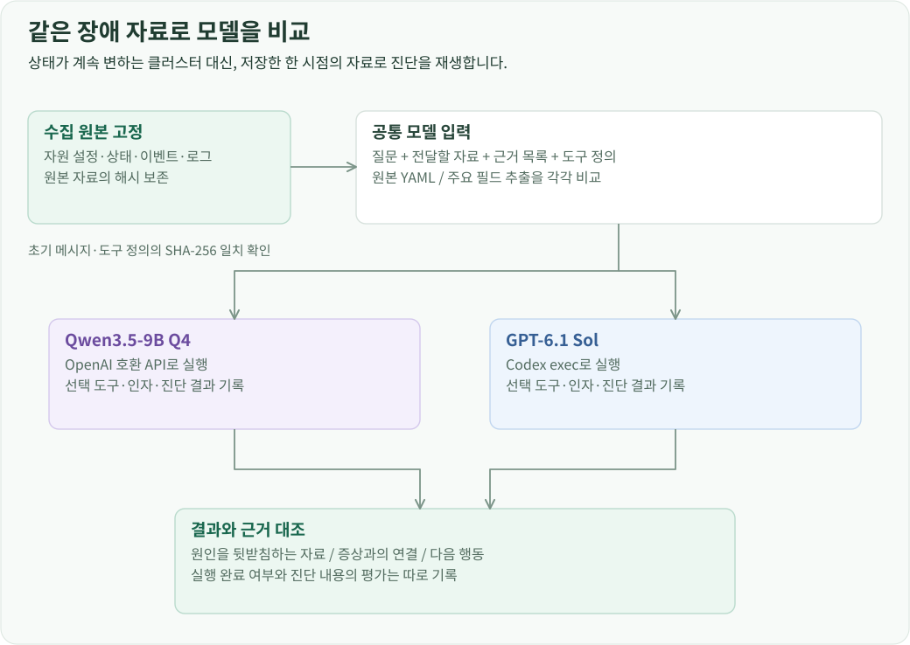
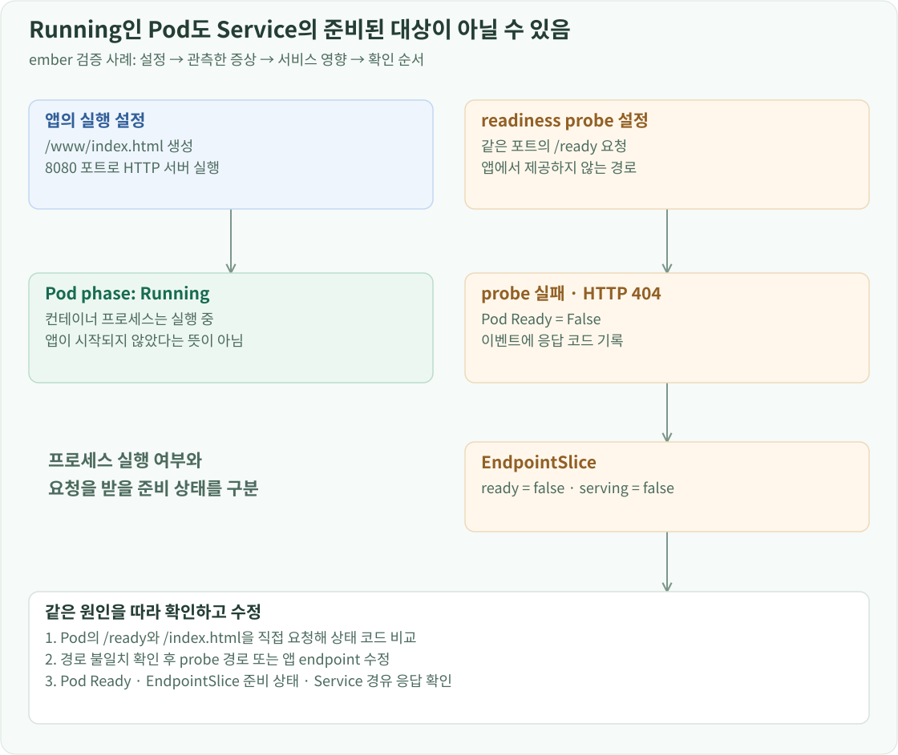

검증 개요
장애 진단을 검증할 때는 원인을 알고 있는 앱을 배포하고, 실제로 수집한 설정·상태·이벤트·로그에서 그 원인을 찾아내는지 확인했습니다. 이어서 같은 자료를 Qwen과 Sol에 전달해, 수집 단계의 문제와 모델 해석의 문제를 분리했습니다.
원인이 다른 앱을 같은 경로로 진단
전용 Namespace에 HTTP 서버를 바탕으로 한 테스트 앱을 배포하고 설정을 달리했습니다. 모델에는 앱의 자원과 관측 자료를 전달했습니다. 테스트 앱 이름을 조건문으로 검사하거나, 앱별 정답을 진단 프롬프트에 넣지 않았습니다.
| 테스트 앱 | 재현한 구성 | 진단에서 연결해야 할 정보 |
|---|---|---|
| atlas | 존재하지 않는 이미지 태그 지정 | 이미지 참조 → 다운로드 실패 이벤트 → 컨테이너 대기 |
| birch | 필수 ConfigMap 참조 누락 | 볼륨 참조 → FailedMount → 컨테이너 시작 실패 |
| cedar | 대응하는 PV가 없는 PVC 사용 | PVC의 클래스·selector → 바인딩 대기 → Pod Pending |
| delta | 일치하는 노드가 없는 nodeSelector 지정 | 배치 조건·Node 정보 → FailedScheduling |
| ember | 제공하지 않는 HTTP 경로를 readiness probe로 지정 | 실행 명령·probe → HTTP 404 → 준비되지 않은 Service backend |
| harbor | 정상 HTTP 서버와 readiness probe | 준비된 Pod·Deployment·endpoint를 근거로 이상 없음 판단 |
이 테스트의 harbor는 레지스트리 제품 Harbor가 아니라 정상 동작을 비교하기 위해 만든 HTTP 서버의 이름입니다.
같은 입력으로 Qwen과 Sol 비교
2026년 10월 30일 비교에서는 수집한 API 응답과 로그를 저장한 뒤 재사용했습니다. Qwen은 qwen3.5-9b-q4, 비교 모델은 Codex exec의 gpt-6.1-sol을 사용했습니다. 자원 YAML 원본을 전달하는 조건과 자원별 주요 필드를 추출하는 조건을 각각 실행했습니다.

각 입력 조건 안에서 두 모델에 전달한 초기 메시지와 도구 정의의 SHA-256을 비교했습니다. 6개 사례 모두 해시가 같았고, 원본 자료의 해시도 유지됐습니다. 모델마다 API 호출 방식은 달라도, 앱이 준비한 질문·자료·도구 정의가 같은지 확인한 것입니다.
실행이 완료됐다는 사실과 진단이 맞았다는 평가는 따로 기록했습니다. 완료 여부는 응답이 스키마와 인용 검사를 통과했는지 나타냅니다. 진단 검토에서는 원인에 근거가 있는지, 증상에서 원인으로 연결이 되는지, 제안한 확인 방법으로 실제 원인을 구분할 수 있는지를 봤습니다.
ConfigMap 누락: 설정과 이벤트를 연결
birch의 Pod는 ContainerCreating 상태였습니다. 이 상태만으로는 이미지·볼륨·네트워크 중 무엇이 문제인지 알 수 없습니다. 수집 자료에는 다음 볼륨 설정과 이벤트가 함께 있었습니다.
# Pod spec의 관련 필드
volumes:
- name: settings
configMap:
name: app-settings
FailedMount: configmap "app-settings" not found
컨테이너는 이 볼륨을 /settings에 마운트하도록 설정되어 있었고 재시작 횟수는 0이었습니다. Sol은 필수 ConfigMap을 찾지 못해 마운트가 실패했고, 그 결과 컨테이너가 시작되지 못했다고 연결했습니다. 다음 행동도 같은 원인을 따라 제안했습니다. 배포가 참조하는 이름과 Namespace를 확인하고, 의도한 설정을 복원하거나 참조를 수정한 뒤 Pod의 Ready와 Deployment의 가용성을 확인하는 순서입니다.
Qwen도 ConfigMap 누락을 찾았지만, 같은 답변에 이미지 다운로드 실패와 자원 부족 가능성을 추가했습니다. 두 모델의 입력에 같은 FailedMount 기록이 있었으므로, 이 차이는 자료 수집보다 원인 후보를 좁히는 해석 단계에서 발생한 것으로 볼 수 있었습니다.
Readiness 실패: Pod에서 서비스 영향까지 추적
ember의 실행 명령은 /www/index.html을 만들고 8080 포트에서 HTTP 서버를 실행했습니다. readiness probe는 같은 포트의 /ready를 검사했습니다. 수집된 이벤트에는 HTTP 404가, Pod에는 Running이면서 Ready=False인 상태가 기록되어 있었습니다.

Service에 연결된 EndpointSlice에서도 해당 주소의 ready와 serving이 모두 false였습니다. 이 정보로 “컨테이너 프로세스가 실행 중이다”와 “서비스 요청을 받을 준비가 됐다”를 구분할 수 있었습니다.
Sol의 답변은 먼저 Pod의 8080 포트에 직접 /ready와 /index.html을 요청해 상태 코드를 비교하도록 했습니다. 경로 불일치가 확인되면 probe 경로나 앱의 준비 상태 endpoint를 수정하고, 이후 Pod Ready와 Service 경유 응답을 확인하는 순서였습니다. Qwen도 경로 불일치는 찾았지만, 시작 실패 가능성을 추가하거나 원인 확인과 복구 확인의 순서를 섞었습니다.
이 사례를 조사하면서 EndpointSlice의 필드 추출도 수정했습니다. 다른 자원처럼 spec·status만 남기면 최상위에 있는 endpoints, ports, addressType이 빠졌습니다. 자원의 API 그룹과 Kind별로 필드를 선택하고, 원래 경로와 false 같은 값을 유지하도록 해 서비스의 실제 대상 상태가 모델 입력에 들어가게 했습니다.
정상 판단과 보고서 검증을 분리
harbor는 준비된 Pod와 Deployment, endpoint를 가진 정상 비교군입니다. 초기 Qwen 실행에서는 모델이 이상 없음으로 판단했는데도 관측 근거 필드가 빠져 앱의 보고서 검증을 통과하지 못했습니다.
여기서는 모델에게 진단 전체를 다시 쓰게 하는 대신, 기존 판단과 요약을 보존하고 누락된 관측 근거만 작성하게 했습니다. 저장된 실패 응답을 그대로 재생한 뒤 근거 보완을 한 번 호출해 정상 보고서로 완료되는지 확인했습니다. 이후 주요 필드 입력으로 실행한 비교에서도 Qwen과 Sol 모두 이상 없음으로 보고서를 완료했습니다.
검증 결과를 다음 개선으로 연결
6개 사례에서 주요 필드 입력을 사용한 두 모델은 모두 보고서를 완료했습니다. 내용 검토에서는 Qwen의 PVC 클래스 해석, nodeSelector와 taint 구분, 근거 없는 추가 원인과 행동 순서에서 차이가 남았습니다. 완료율과 별개로 이 차이를 사례별 검토 결과에 보존했습니다.
이 과정에서 수정 대상은 세 곳으로 나뉘었습니다. 원본에 있는데 입력에 없는 정보는 필드 추출을 고쳤고, 정상 판단을 형식 오류로 잃어버리는 경우는 보고서 검증과 보완 절차를 고쳤습니다. 같은 입력에서 원인 해석이 달라지는 경우는 모델 비교 사례로 남겼습니다.
각 결과는 모델 입력·도구 호출·응답을 연결한 실행 기록으로 되돌아갈 수 있습니다. 새로운 입력 구성이나 모델을 시험할 때도 같은 자료를 재생하고, 바뀐 답변을 기존 판단과 대조할 수 있도록 한 구조입니다.